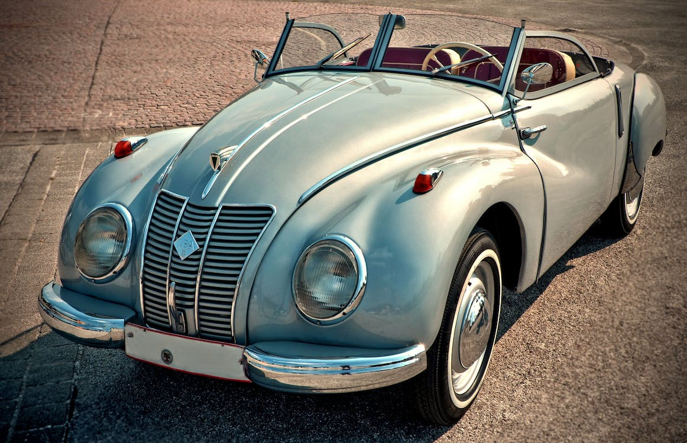

Galeria


- 

RetroWheels
Venha celebrar a história automotiva no Encontro Nacional de Carros Clássicos da RetroWheels, que acontecerá
de 15 a 17 de setembro de 2023, no Centro de Eventos Clássicos CarMania, em São Paulo.
Neste evento emocionante, você terá a oportunidade de explorar uma incrível exposição de veículos clássicos
restaurados, participar de desfiles e competições de elegância, além de aproveitar palestras com
especialistas da indústria automotiva.
Se você é proprietário de um carro clássico, não deixe de se inscrever e compartilhar a paixão por essas
verdadeiras joias automobilísticas. As vagas são limitadas, então garanta sua participação preenchendo o
formulário de inscrição e seguindo o regulamento.
Mesmo se você não possui um carro clássico, você é mais do que bem-vindo para prestigiar o evento. A entrada
é gratuita para os visitantes, e temos certeza de que você terá uma experiência enriquecedora e repleta de
memórias inesquecíveis.
Junte-se a nós nesta celebração emocionante dos carros que marcaram gerações e escreveram suas histórias nas
estradas do Brasil e do mundo. Esperamos você no Encontro Nacional de Carros Clássicos da RetroWheels!
Venha fazer parte desta emocionante celebração da história automotiva.Rreuniremos apaixonados por carros
antigos para compartilhar memórias inesquecíveis. Traga seu
carro clássico para exibição ou simplesmente prestigie a incrível exposição de veículos restaurados. Não
perca essa oportunidade única!
Cadastre-se abaixo e garanta sua participação neste evento imperdível.
Junte-se a nós nesta viagem nostálgica pelas estradas do passado e do presente!
Vagas limitadas!
O Encontro Nacional de Carros Clássicos é aberto a todos os entusiastas de carros antigos, sejam eles proprietários de veículos clássicos ou apenas visitantes interessados na história automotiva.
Para cadastrar seu carro clássico no encontro, basta preencher o formulário de inscrição disponível em nosso site e seguir as orientações fornecidas. As vagas são limitadas, portanto, recomendamos que você se inscreva o mais breve possível
Aceitamos veículos com pelo menos 30 anos de fabricação, em bom estado de conservação e que mantenham as características originais ou restaurações fieis ao modelo de fábrica. Todos os modelos e marcas de carros clássicos são bem-vindos.
A inscrição de carros clássicos como expositores possui um valor simbólico, que contribui para a organização do evento. A entrada para visitantes é gratuita, permitindo que todos possam apreciar a beleza dos carros clássicos sem custo adicional.
O Encontro Nacional de Carros Clássicos da RetroWheels oferecerá uma programação variada, incluindo exposição de veículos clássicos restaurados, desfiles, competições de elegância, palestras com especialistas e uma confraternização noturna para interação entre os participantes.